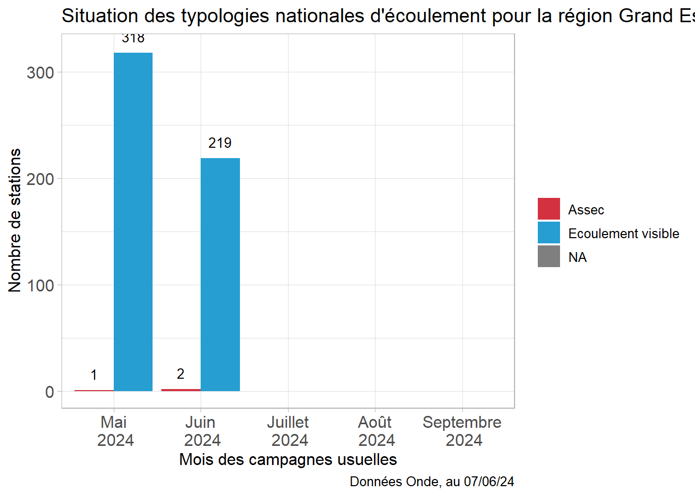
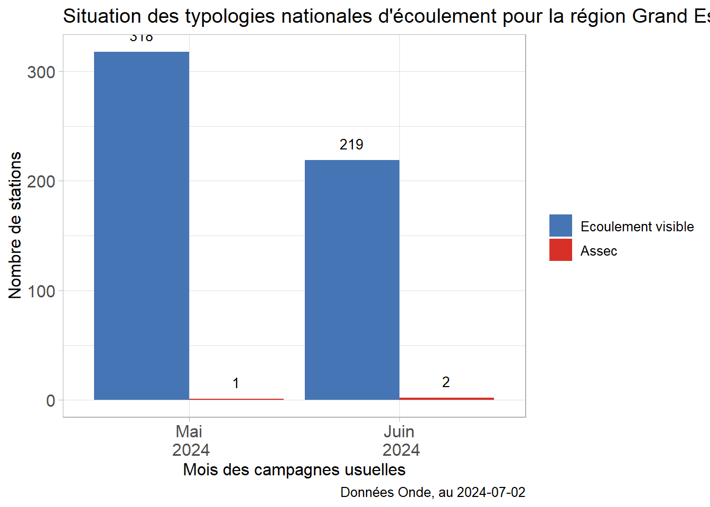
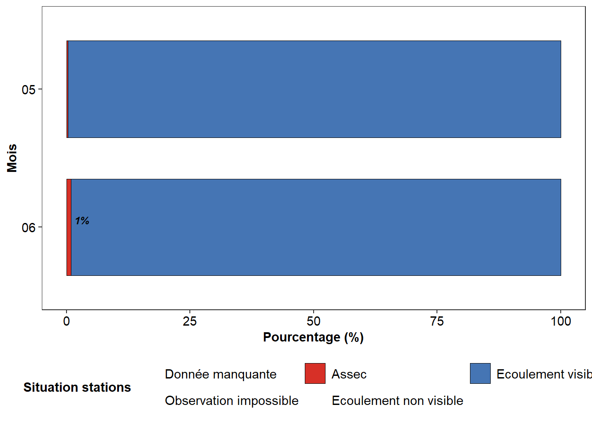
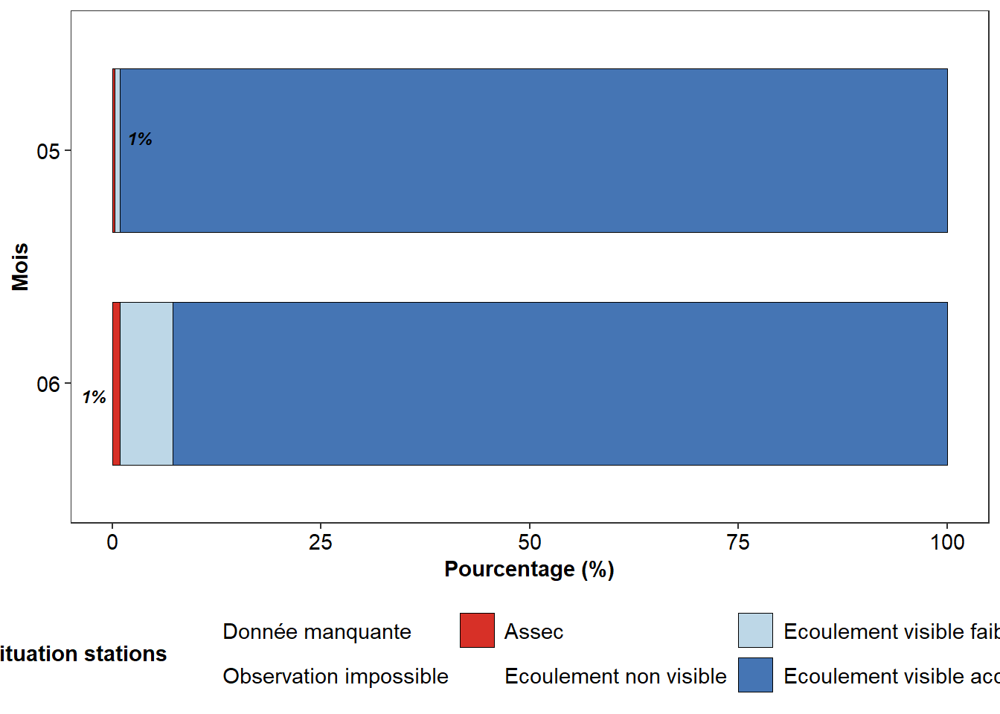
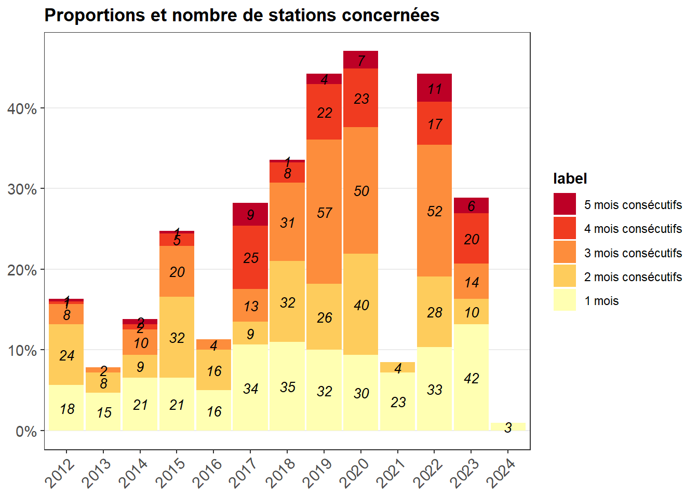
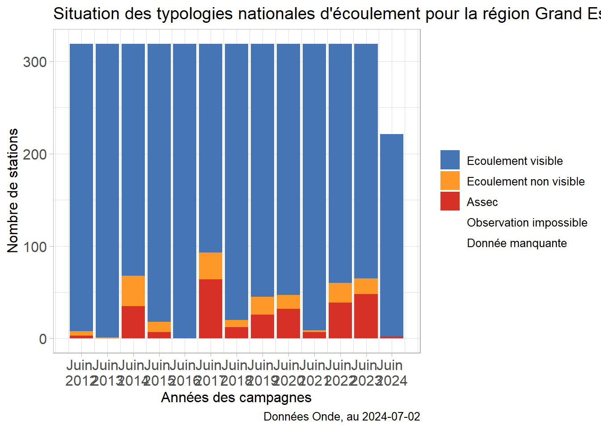
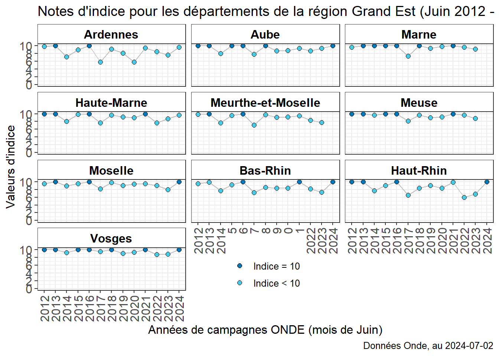

Show the code
##########
# Library ----
##########
require(tidyr)Le chargement a nécessité le package : tidyrShow the code
require(dplyr)Le chargement a nécessité le package : dplyr
Attachement du package : 'dplyr'Les objets suivants sont masqués depuis 'package:stats':
filter, lagLes objets suivants sont masqués depuis 'package:base':
intersect, setdiff, setequal, unionShow the code
require(ggplot2)Le chargement a nécessité le package : ggplot2Warning: le package 'ggplot2' a été compilé avec la version R 4.4.1Show the code
require(lubridate)Le chargement a nécessité le package : lubridate
Attachement du package : 'lubridate'Les objets suivants sont masqués depuis 'package:base':
date, intersect, setdiff, unionShow the code
##########
# Lecture des fichiers ----
##########
source("_config.R")Warning in dir.create(doss_annee): '.\..\2024' existe déjàWarning in dir.create(doss_mois): '.\..\2024\Juin' existe déjàWarning in dir.create(paste0(doss_mois, "/data")): '.\..\2024\Juin\data' existe
déjàWarning in dir.create(paste0(doss_mois, "/output")): '.\..\2024\Juin\output'
existe déjàWarning in dir.create(paste0(doss_mois, "/www")): '.\..\2024\Juin\www' existe
déjàShow the code
load(paste0(doss_mois,"/output/graphiques.rda"))
load(paste0(doss_mois,"/data/donnees_generales.rda"))
##########
# Analyses ----
##########
######## Ecoulement ----
couleur_ecoulement <- c("Assec" = "#d3313f", "Ecoulement visible" = "#269ed2",
"Ecoulement non visible" = "#ef8b36", "Observations manquantes" = "#b6b7b8")
####################
#### Campagne actuelle
# verif annee
unique(onde_DC_usuelles$Annee)[1] 2024Show the code
# nombre de stations prelevees = 319 ?
dim(onde_DC_usuelles)[1] 221 17Show the code
if(nrow(onde_DC_usuelles) != 319){
print("Attention peut être un probleme")
}[1] "Attention peut être un probleme"Show the code
# Quelle semaine de prelevement ?
unique(lubridate::week(lubridate::ymd(onde_DC_usuelles$date_campagne)))[1] 26 25Show the code
table(onde_DC_usuelles$date_campagne)
2024-06-23 2024-06-24 2024-06-25 2024-06-26
61 30 60 70 Show the code
### Nombre de station par bassin
table(onde_DC_usuelles$libelle_bassin)
Rhin-Meuse Rhône-Méditerranée Seine-Normandie
147 9 65 Show the code
table(onde_DC_usuelles$libelle_bassin, onde_DC_usuelles$code_departement )
08 10 52 57 67 68 88
Rhin-Meuse 17 0 2 40 30 30 28
Rhône-Méditerranée 0 0 6 0 0 0 3
Seine-Normandie 13 30 22 0 0 0 0Show the code
table(onde_DC_usuelles$date_campagne, onde_DC_usuelles$code_departement)
08 10 52 57 67 68 88
2024-06-23 0 0 30 0 0 0 31
2024-06-24 30 0 0 0 0 0 0
2024-06-25 0 30 0 0 30 0 0
2024-06-26 0 0 0 40 0 30 0Show the code
## departement manquant
dpt_manquants <- setdiff(conf_dep, unique(onde_DC_usuelles$code_departement))
if(length(dpt_manquants) != 0){
print(paste0("Il manque les données pour les departements suivant : ", paste0(dpt_manquants, collapse =", ")))
}[1] "Il manque les données pour les departements suivant : 51, 54, 55"Show the code
# calculer delta entre dept
onde_DC_usuelles %>%
dplyr::select(code_departement, date_campagne) %>%
dplyr::group_by(code_departement) %>%
dplyr::summarise(maxi_date = max(date_campagne),
mini_date = min(date_campagne), delta_date = max(date_campagne) - min(date_campagne)) %>%
dplyr::ungroup()# A tibble: 7 × 4
code_departement maxi_date mini_date delta_date
<chr> <date> <date> <drtn>
1 08 2024-06-24 2024-06-24 0 days
2 10 2024-06-25 2024-06-25 0 days
3 52 2024-06-23 2024-06-23 0 days
4 57 2024-06-26 2024-06-26 0 days
5 67 2024-06-25 2024-06-25 0 days
6 68 2024-06-26 2024-06-26 0 days
7 88 2024-06-23 2024-06-23 0 days Show the code
### Nombre de typologie d'écoulement
table(onde_DC_usuelles$lib_ecoul3mod)
Assec Ecoulement visible
2 219 Show the code
table(onde_DC_usuelles$lib_ecoul3mod, onde_DC_usuelles$code_departement)
08 10 52 57 67 68 88
Assec 1 0 1 0 0 0 0
Ecoulement visible 29 30 29 40 30 30 31Show the code
table(onde_DC_usuelles$lib_ecoul3mod, onde_DC_usuelles$libelle_bassin)
Rhin-Meuse Rhône-Méditerranée Seine-Normandie
Assec 1 0 1
Ecoulement visible 146 9 64Show the code
table(onde_DC_usuelles$lib_ecoul4mod, onde_DC_usuelles$libelle_bassin)
Rhin-Meuse Rhône-Méditerranée Seine-Normandie
Assec 1 0 1
Ecoulement visible acceptable 136 8 61
Ecoulement visible faible 10 1 3Show the code
## commentaire
# table(onde_DC_usuelles$commentaire_sur_la_campagne, onde_DC_usuelles$code_departement )
## stations assec
onde_DC_usuelles %>%
dplyr::filter(lib_ecoul3mod == "Assec") %>%
dplyr::select(libelle_cours_eau, code_departement)# A tibble: 2 × 2
libelle_cours_eau code_departement
<chr> <chr>
1 Ruisseau le Donjon 08
2 Fossé 02 de la Commune de Humbecourt 52 Show the code
## barplot par mois de la situation
data_barplot <- onde_mois_usuel %>%
dplyr::filter(Annee == max(Annee)) %>%
dplyr::select(lib_ecoul3mod, Mois, code_station ) %>%
dplyr::group_by(Mois) %>%
dplyr::count(lib_ecoul3mod, .drop = FALSE)
ggplot(data_barplot, aes(fill= lib_ecoul3mod,
x = Mois, y = n)) +
geom_bar(position = position_dodge(), stat = "identity") +
geom_text(aes(label = ifelse(n > 0, n, "")), vjust = -1, color = "black",
position = position_dodge(0.9), size=3.5) +
scale_fill_manual(values = couleur_ecoulement, drop = FALSE, name = "") +
ylim(c(0, max(data_barplot$n)+2)) +
labs(x = "Mois des campagnes usuelles", y = "Nombre de stations",
caption = "Données Onde, au 07/06/24",
title = paste0("Situation des typologies nationales d'écoulement pour la région Grand Est - Campagne ", anneeAVoir)) +
theme_light() +
theme(text = element_text(size = 12),
axis.text = element_text(size = 12)) +
scale_x_discrete(labels = paste0(c("Mai", "Juin", "Juillet", "Août", "Septembre"), "\n 2024"))
Show the code
plot_ecoul_anneeAVoir
Show the code
bilan_cond_reg_typo_nat
Show the code
bilan_cond_reg_typo_dep
Show the code
assecs_consecutifs_reg
Show the code
####################
#### Comparaison inter-annuelle hist + courante
## ecoulement
zaza <- onde_DC_usuelles %>%
dplyr::select(Mois, Annee) %>%
dplyr::group_by(Mois, Annee) %>%
dplyr::mutate(nbStation = dplyr::n()) %>%
dplyr::distinct()
zaza# A tibble: 1 × 3
# Groups: Mois, Annee [1]
Mois Annee nbStation
<fct> <dbl> <int>
1 06 2024 221Show the code
## <!> par construction <!>
zaza <- onde_mois_usuel %>%
dplyr::select(Mois, Annee) %>%
dplyr::group_by(Mois, Annee) %>%
dplyr::mutate(nbStation = dplyr::n()) %>%
dplyr::distinct()
table(zaza$nbStation, zaza$Annee)
2012 2013 2014 2015 2016 2017 2018 2019 2020 2021 2022 2023 2024
221 0 0 0 0 0 0 0 0 0 0 0 0 1
319 5 5 5 5 5 5 5 5 5 5 5 5 1Show the code
## remarque : le nombre de stations change en fonction des années. De plus, des fois on a pas le même
# nombre de stations entre les mois d'une meme Annee
plot_ecoul_moisAVoir
Show the code
######## Indice ----
plot_indice_moisAVoir
Show the code
# indice_onde_mois_usuel_mois